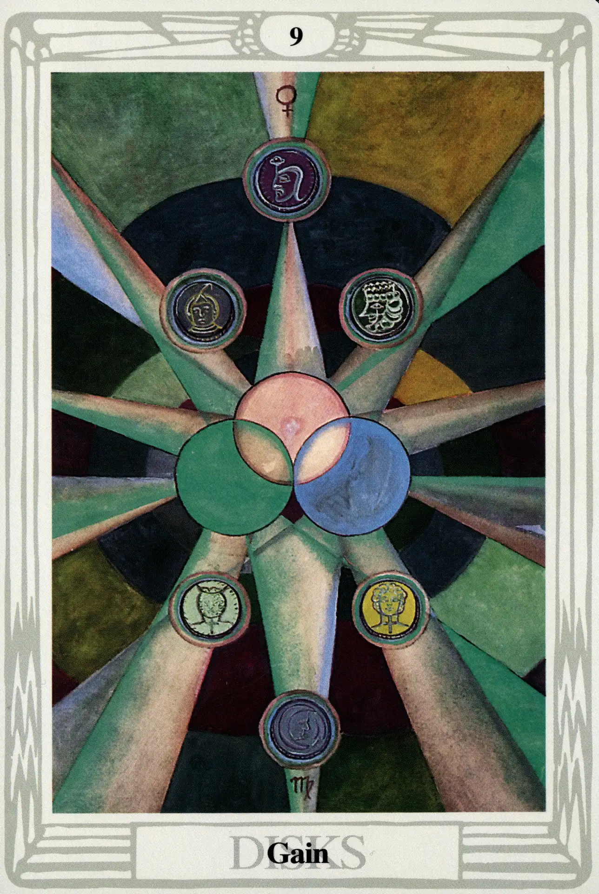

Disks
Nine of Disks
Gain

(Venus in Virgo)
10° to 20° Virgo
September 2 to September 11
Original Title: Lord of Material Gain.
Golden Dawn Model: From clouds at the bottom of the card, a hand appears holding a rose branch with nine white roses, each of which touches a disk. The disks are arranged thus:
Princess Scale for Yesod: Citrine, flecked azure.
The Four Scales for Venus: Emerald Green; Sky Blue; Early Spring Green; Bright Rose or Cerise, rayed Pale Green.
The Four Scales for Virgo: Green (yellowish); Slate Grey; Green Grey; Plum color.
Formula: 9 (Yesod) of Disks (Assiah) + Venus in Virgo = GAIN
Oh, how happy I am to see this card when the question concerns material matters! I don't care how unspiritual it sounds, I love this card! Six small coins, stamped with remarkably detailed and imaginative personifications of the planets, surround a large unmarked solar orb that is interlaced with two companion disks of the same size. Few cards of the Thoth Tarot bear less resemblance to Crowley's description in
The Book of Thoth than this one. I have to conclude that his words were part of his original instructions to Harris and not an account of the finished product.
Be that as it may, the Nine of Disks is a balanced and beautiful interpretation of what most people on this planet think of as good luck. Crowley even uses the words “good luck” twice in his comments:
This card is ruled by Venus in Virgo. It shows good luck attending material affairs, favour and popularity…the mingling of “good luck and good management.”
Yesod of Assiah is such a low position in the lowest of the four Qabalistic worlds that its lowness is actually an asset. We are talking big-time payoff on the material plane, and we are blissfully insensitive to concerns and anxieties that plagued us throughout the cards of the other suits. “The suit of Disks,” Crowley observes, “is much too dull to care; it reckons up its winnings; it does not worry its head about whether anything is won when al is won.”